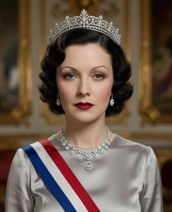
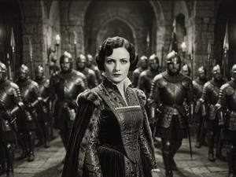
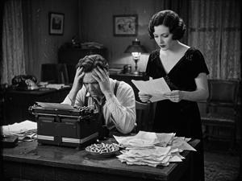
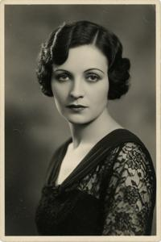

Королева Адель
{kind=link}

Адель Гловач (урождённая Этелька Леонардова Баумгартен; 12 апреля 1903 — 3 сентября 1952) — супруга Дрогана I, короля Верхней Паннонии, с 1936 года королева-консорт и наследница престола. Она родилась во Вроновице в театральной семье смешанного происхождения — деглянского, згурского, венгерского и еврейского. В молодости она делала кинокарьеру в Веймарской Германии под псевдонимом Адель Верже, а в 1930 году вернулась в Верхнюю Паннонию. Её брак в 1933 году с генералом Дроганом Гловачем вызвал скандал в паннонских военных кругах. Благотворительная деятельность и негласное заступничество за политзаключённых принесли ей широкое всенародное признание, а с 1936 года, уже став королевой, она выступала как человеческое лицо жестокого по своей сути режима.
После венгерского вторжения 1940 года и убийства короля Дрогана Адель бежала в Лондон, создала там правительство в изгнании и всю войну возглавляла паннонское монархическое сопротивление. Британские союзники на Ялтинской конференции отказались от её поддержки, но она до самой смерти в 1952 году оставалась центральной фигурой антикоммунистической паннонской эмиграции — и погибла почти наверняка от рук агентов НООН, спецслужбы коммунистического режима.
- 1 Ранние годы (1903–1924)
- 2 Карьера в немом кино (1924–1930)
- 3 Возвращение в Верхнюю Паннонию (1930–1933)
- 4 Брак с Дроганом Гловачем (1933)
- 5 Первая леди (1933–1934)
- 6 Королева Верхней Паннонии (1936–1940)
- 7 Бегство в Англию и правительство в изгнании (1940–1945)
- 8 Последние годы и смерть (1945–1952)
- 9 Наследие
Ранние годы (1903–1924)
Этелька Баумгартен родилась 12 апреля 1903 года во Вроновице. Её отец Леонард Баумгартен руководил Вроновицким муниципальным театром; мать Веселина (урождённая Мельник) была актрисой згуро-деглянского происхождения. Эта семья была смешанной даже по меркам многонационального паннонского общества: Мельники были славянами, а Баумгартены — венгеризированными евреями, жившими во Вроновице уже третье поколение.
Из трёх вроновицких театров консервативный Королевский давал представления только на немецком и венгерском, националистический Славянский — только на паннонском, а Муниципальный держался вне политики и представлял на всех трёх языках. Этелька росла за кулисами, к десяти годам уже играла небольшие роли и одновременно осваивала венгерский и немецкий. Её школьное образование осталось незавершённым: три года она училась во вроновицкой женской гимназии, но так её и не закончила. Она не связывала себя ни с одной из конкурирующих этнических идентичностей. В интервью 1931 года на вопрос о своём происхождении она ответила: «Паннонка. Всё остальное — дело моих родителей».
Карьера в немом кино (1924–1930)
Роли в Германии
В начале 1924 года двадцатилетняя Этелька Баумгартен отправилась в Берлин, взяв псевдоним Адель Верже — звучащий фешенебельно и легко произносимый в любой центральноевропейской стране. Работу она нашла через паннонского знакомого из театральных кругов, а через несколько месяцев поступила статисткой по контракту на киностудию UFA (Universum Film AG).
Первые роли Адели Верже не были указаны в титрах. По студийным документам, она снималась статисткой в «Метрополисе» (1927) Фрица Ланга и недолго — в «Тартюфе» (1925) Ф. В. Мурнау; обе работы ввели её в окружение крупнейших фигур немецкого кино.
Первую роль, указанную в титрах, она получила в ныне утраченном фильме «Песнь чужестранки» (нем. Das Lied der Fremde, 1927, реж. Ханс Шварц) — четыре минуты экранного времени в роли экзотической танцовщицы. Роль удостоилась упоминания в «Film-Kurier»: «Фройляйн Верже, неизвестного восточноевропейского происхождения, обладает меланхоличной фотогеничностью, которую камера улавливает как будто вполне непринуждённо».
Самой заметной её работой стала роль второго плана в «Изгнанниках» (нем. Die Verbannten, 1928, реж. Рихард Освальд) — мелодраме о центральноевропейских эмигрантах в послевоенной Вене; два критика отметили её игру как самый естественный элемент фильма.
Личная жизнь в Берлине
В берлинские годы Адель не раз посещала Romanisches Café и была завсегдатаем светской жизни UFA. Около двух лет её связывали романтические отношения с оператором Карлом Хоффманом, снявшим «Голем» (1920); разрыв прошёл, судя по всему, без взаимных обид. В 1927 году журнал «Die Dame» ненадолго упомянул её в связи с актёром Антоном Вальбруком, не уточнив характер этой связи.
Важнее оказалась дружба с режиссёром Г. В. Пабстом, с которым Адель познакомилась на площадке «Ящика Пандоры» (нем. Die Büchse der Pandora, 1929): контрактную роль ей сократили, и она осталась работать помощницей на площадке. По некоторым сведениям, Пабст рассматривал её для «Дневника падшей» (Tagebuch einer Verlorenen, 1929), но в итоге не утвердил; переписка на этот счёт не сохранилась.
Возвращение в Верхнюю Паннонию (1930–1933)
«Заря над Дравой»
{kind=link}

Переход кино на звук поставил крест на карьере Адели в Германии: славянский акцент, незаметный в немом кино, делал её непригодной для звуковых картин. «Кино для меня здесь кончилось», — писала она матери. В середине 1930 года Адель вернулась во Вроновицу — город, где социальную напряжённость обострилась в годы Великой депрессии, а Движение национального усиления генерала Гловача с каждым годом набирало силу.
Местный кинематограф только начинал развиваться; конкуренции практически не было. На единственной в стране киностудии «Паноскоп» работал почти единственный в стране режиссёр Беньямин Швах, хорошо знакомый с семьёй Баумгартен, как и со всеми в узком артистическом мирке небольшой страны. Он сразу предложил Адели главную роль в «Заре над Дравой» (Zarja nad Dravoju, 1930) — первом паннонском звуковом фильме, костюмной драме, где она сыграла дворянку, героически противостоящую турецким захватчикам. Вроновицкая пресса дала ей прозвище «паннонской Мирны Лой» — сравнение, которое она нашла одновременно лестным и немного нелепым. Тем не менее, это был успех, немедленно сделавший Адель Верже первой актрисой страны.
«Муза»
{kind=link}

На волне этого успеха в 1931 году Адель снялась в следующем, и гораздо более скандальном, фильме Шваха «Муза» по его же сценарию. Сюжет был навеян давней, но общеизвестной в стране трагической историей отношений Волимира Слезеня и Кветаны Блухи. Хотя Швах поменял имена и многие обстоятельства и перенёс историю в современность, аллюзия была совершенно прозрачна и тем более скандальна, что Кветана была ещё жива (ей исполнилось 70 лет), а её муж Злотан Чиграй занимал должность президента республики. Адель сыграла свою героиню Магдолну как роковую женщину, сознательно играющую чувствами гениального писателя, чтобы поддерживать в нём огонь вдохновения; общепринятая трактовка поведения Кветаны в этой истории была именно такова.
Летом 1931 года, когда «Муза» вышла на экраны, шла предвыборная кампания, и фильм читался как скрытый политический выпад против Чиграя. Фильм напоминал: когда-то в молодости жена нынешнего президента флиртовала с классиком национальной литературы и довела того до самоубийства; разве мужчина, неспособный навести порядок в своей семье, годится на роль отца нации? Режиссёр отрицал всякий политический подтекст, но, возможно, лукавил. Беньямин Швах был родным братом Рафаэля Шваха, одного из лидеров Паннонской Советской Республики, расстрелянного легионерами Гловача в 1919 году. Двенадцать лет спустя генерал Гловач был явным кандидатом в диктаторы, и Швах, подрывая своим фильмом авторитет президента, играл тому на руку, возможно, стремясь улучшить свою сомнительную репутацию в глазах генерала. Если таков был его сознательный ход, он вполне удался. Гловач посмотрел фильм и воспринял его благосклонно. Шваха ждала карьера главного официозного кинематографиста режима Гловача, а исполнительницу главной роли — ещё более блестящая судьба.
Брак с Дроганом Гловачем (1933)
{kind=link}

Адель познакомилась с генералом Дроганом Гловачем осенью 1931 года, вскоре после совершённого им переворота 1 сентября. Для Адели, вероятно, особого выбора не было: мало какая женщина осмелилась бы сказать Верховному главнокомандующему «нет». Для самого же Гловача эти отношения переросли в нечто более серьёзное, чем его многочисленные прежние интрижки с легкодоступными женщинами.
В начале 1933 года Гловач объявил об их браке. Для офицеров старой австро-венгерской закалки было немыслимо, чтобы главнокомандующий взял в законные жёны бывшую актрису смешанного, отчасти еврейского происхождения: одни подавали прошения об отставке, другие предпочитали заблаговременный уход на пенсию. Гловач принимал эти прошения равнодушно. Сама Адель прошла этот сложный период с таким спокойствием, что обезоружила многих критиков. Она официально сменила венгеризированное имя Этелька на Адель (згур.: Adelj; дегл.: Adeĺ; глаг.: ⰀⰄⰅⰎⰠ), заявив тем самым о своей славянской самоидентификации.
Первая леди (1933–1934)
В промежутке между свадьбой и коронацией мужа Адель заложила основу той публичной репутации, что будет поддерживать её всю оставшуюся жизнь, — действуя в рамках жестокой диктатуры и не бросая вызов её устоям.
Главным полем её публичной деятельности стала благотворительность. В 1934 году Адель основала Паннонскую женскую лигу помощи, которая организовывала раздачу продовольствия в кварталах, пострадавших от Депрессии, финансировала приюты и открывала курсы грамотности для крестьянок. В приватном порядке она заступалась перед мужем за политзаключённых. Она никогда не хлопотала об освобождении заметных фигур, но, как документально известно, добилась смягчения как минимум одиннадцати смертных приговоров. Слухи об этом распространялись, как обычно в закрытых обществах: все знали, никто официально не подтверждал — и это лишь усиливало впечатление.
Королева Верхней Паннонии (1936–1940)
В 1934 году Гловач взошёл на престол как король Дроган I; в 1936 году он короновал Адель как королеву и, сославшись на бездетность их брака, назначил своей наследницей. Это решение вызвало куда меньше споров, чем ранее брак: Адель успела завоевать полноценную всенародную популярность, а военные не оказали никакого открытого сопротивления.
Став королевой, Адель сделалась главным лицом режима на культурных мероприятиях, покровительствовала паннонскому изобразительному искусству и музыке. В королевской резиденции она держала салон, где собиралась интеллигенция всех политических взглядов, — редкий островок относительной свободы. К 1938 году Женская лига помощи развернула свои программы по всей стране.
Бегство в Англию и правительство в изгнании (1940–1945)
Вторжение и бегство
В сентябре 1940 года венгерское вторжение и внутренний переворот положили конец королевству. Короля Дрогана убили; королева Адель, которую, по некоторым сведениям, предупредили за несколько часов, покинула Вроновицу на автомобиле. Ей помог в этом личный секретарь сэр Рэндалл Мэсси — англичанин, состоявший на королевской службе с 1938 года и, как многие считали, офицер британской разведки. Через нейтральную Югославию королеву перевезли к Адриатике, где её принял на борт британский военный корабль.
В Лондон она прибыла в октябре 1940 года. Первоначальный интерес британского правительства был чисто стратегическим: правительство в изгнании оккупированного центральноевропейского государства представляло собой полезный дипломатический капитал. Адель провозгласила себя королевой Верхней Паннонии в изгнании, устроила двор в арендованном доме в Кенсингтоне и назначила эмигрантское правительство из бывших парламентариев, дипломатов и военных.
В 1941 году королева Адель родила дочь Людмилу, объявленную посмертным ребёнком короля Дрогана. Официальная дата рождения — 10 июня, через девять месяцев после смерти короля; ряд подозрительных деталей наводит на мысль, что на самом деле роды состоялись на два месяца позже. Гипотеза о биологическом отцовстве Рэндалла Мэсси никогда не подтверждалась и не комментировались ни одной из сторон.
Передачи Би-би-си и монархическое сопротивление
В сотрудничестве с Европейской службой Би-би-си королева Адель регулярно вела передачи на паннонском языке для оккупированной страны. Слушатели, которым грозили суровые наказания за настройку на зарубежные станции, все годы оккупации собирались у спрятанных радиоприёмников. Отряды партизан-монархистов — не имевшие большого военного значения, но важные символически — отчасти держались именно на том, что королева продолжала действовать.
Адель также занималась организацией эвакуации паннонских граждан, документировала преступления оккупантов для будущих послевоенных трибуналов и поддерживала официальный статус Верхней Паннонии как союзной державы — что на практике влияло на условия содержания паннонских военнопленных.
Ялта и отказ союзников
К моменту Ялтинской конференции советские войска уже заняли Верхнюю Паннонию, и правительство Гоубки обладало реальной властью на местах. Сталин потребовал от британцев прекратить поддержку королевы Адели, назвав монархическое движение «реакционным фашистским образованием» — и у британцев не было аргументов, чтобы это оспорить.
Черчилль некоторое время пытался добиться какого-то компромисса, но отступил. В конце 1945 года Великобритания официально признала правительство Гоубки; правительство Адели утратило формальный статус, британское финансирование и дипломатические права. Кенсингтонский двор продолжил функционировать как частная организация. Адель сохранила титул, но фактически превратилась в частное лицо без государства.
Последние годы и смерть (1945–1952)
Потеря официального признания не остановила политическую деятельность Адели, а лишь изменила её форму. Двор стал центром антикоммунистической паннонской диаспоры, поддерживал связь с монархическим подпольем внутри страны и помогал беженцам. Адель переписывалась с западными политиками и журналистами, взаимодействовала с эмигрантскими комитетами других восточноевропейских стран и с помощью интервью и обращений к эмиграции не давала паннонскому вопросу исчезнуть из поля общественного внимания.
Средств не хватало. После прекращения британских субсидий двор жил на пожертвования эмигрантов и время от времени получал американскую помощь в рамках стратегии холодной войны. Рэндалл Мэсси — чей официальный статус британское правительство так и не признало — оставался неизменным спутником Адели. Как в эмигрантских кругах, так и во внешней разведке НООН он считался её партнёром и в то же время действующим агентом британской разведки.
НООН вело досье Адели с конца 1940-х годов и, как документально установлено, как минимум два раза пыталось внедрить своих агентов в её окружение. Неизвестно, дали ли эти попытки разведывательный материал или были лишь подготовкой к последующим событиям.
3 сентября 1952 года королева Адель умерла в своей кенсингтонской резиденции после короткой болезни, протекавшей как острый гастроэнтерит. Ей было сорок девять лет. Британская судебно-медицинская экспертиза заключила, что смерть естественна; но ретроспективный анализ 1990-х годов, проведённый после частичного открытия архивов НООН, обнаружил следы медленно действующего соединения таллия. Документально известно, что эта спецслужба практиковала данный метод отравления. Виновных так и не установили и не привлекли к ответственности.
Монархисты провозгласили одиннадцатилетнюю принцессу Людмилу королевой в изгнании. Девочку передали на попечение паннонских эмигрантских организаций в США. Ей предстояло вернуться в Верхнюю Паннонию — ненадолго и трагически — спустя сорок два года.
Наследие
Королева Адель занимает особое место в паннонской исторической памяти. В националистической и монархической традиции её почитают как воплощение достойного сопротивления — женщину, превратившую личную трагедию в политическую миссию и отстаивавшую паннонский суверенитет дорогой ценой. В постсоциалистический период в её честь назвали улицы, больницу и среднюю школу.
С левой или критической точки зрения её фигура выглядит куда неоднозначнее: супруга фашистского диктатора, занимавшаяся благотворительностью внутри репрессивной системы, и тем самым отчасти легитимировавшая её. Аргументы такого рода развивала официальная историография эпохи Гоубки, и, хотя та историография в целом дискредитирована, часть аргументов не утратила силы.
Вопрос об истинном отцовстве принцессы Людмилы остаётся открытым. Рэндалл Мэсси умер в Лондоне в 1991 году, так и не высказавшись публично. Тема по-прежнему занимает паннонскую массовую историографию и всерьёз оспаривается внутри монархической традиции, для которой важна с точки зрения династической легитимности.
Категории: Межвоенная эпоха, Монархи, Персоналии